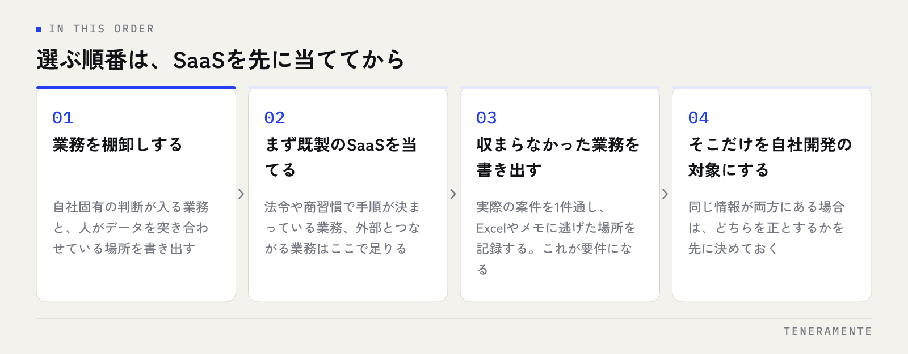

SaaSと自社開発の選び方で迷ったとき、機能一覧を並べて比べても答えは出ません。決め手になるのは、その業務が世の中で標準化されているかどうかです。多くの会社が同じやり方をしている業務は既製のSaaSで足り、自社の判断や例外が入り込む業務は既製の設定画面に収まりません。この記事では、その切り分け方を順に整理します。
📌 この記事の結論
選び方の基準は機能の数ではなく、業務が標準化されているかどうかです。会計・給与・勤怠のように手順が法令や商習慣で決まっている業務はSaaSで足ります。自社の判断基準が入る業務は、SaaSに合わせて運用を曲げるか、自社開発するかの選択になります。まずSaaSを当ててみて、残った業務だけを開発対象にするのが失敗の少ない順番です。
01SaaSと自社開発は「機能の多さ」では選べない
比較検討の場でいちばん多いのが、機能一覧を横に並べて○×を付ける進め方です。これで判断すると、たいてい機能の多いSaaSが選ばれます。ところが導入後に出てくる不満は「機能が少ない」ではなく、「自社のやり方と順番が違う」という種類のものです。
SaaSは、多くの会社に共通する業務の形を前提に作られています。その前提が自社と合っていれば、設定だけで使えます。合っていない場合、画面の項目を無理に読み替えたり、SaaSの外にExcelを置いて埋めたりすることになります。この「外で埋める作業」が発生し始めた時点が、選定を間違えたサインです。
逆に、自社開発は自社の手順をそのまま形にできますが、標準的な業務まで自分で作ると、作る必要のないものを抱えることになります。判断すべきなのは機能の有無ではなく、業務の形を自社が持っているかどうかです。
02既製のSaaSで足りる業務の見分け方
次の条件に当てはまる業務は、既製のSaaSで足ります。無理に作る理由がありません。
- 手順が法令や商習慣で決まっている（会計、給与計算、年末調整、電子帳簿の保存）
- やり方が自社の競争力と関係ない（名刺管理、スケジュール共有、ファイル保管）
- 外部とつながる前提がある（金融機関、電子契約、請求書の受け渡し）
- 自社の運用を標準側に合わせても困らない
特に1つ目が重要です。法令が変わればSaaS側が対応します。自社開発を選ぶと、制度改正ごとに修正費用が発生し続けます。制度に紐づく業務は、作らないほうが長い目で安く済みます。
4つ目は、導入前に確かめておく項目です。SaaSに合わせて運用を変えることを、現場が受け入れられるか。ここを曖昧にしたまま導入すると、現場が従来のやり方を手元で続け、二重管理が残ります。
03自社開発を検討する3つの条件
一方で、次の3つのうち2つ以上に当てはまるなら、自社開発を検討する段階です。
第一に、自社の判断基準が業務に埋め込まれていること。受注の優先順位、見積の出し方、どの条件なら例外を認めるか。これらは会社ごとに違い、SaaSの設定項目として用意されていません。
第二に、複数の業務をまたいでデータを見たいこと。SaaSを業務ごとに分けて入れると、全体を見るための集計が人の手に残ります。月末に各SaaSからCSVを落として突き合わせているなら、その作業自体が開発の対象です。
第三に、その業務が売上に直接つながっていること。受付、見積、現場の進行管理のように、やり方の違いがそのまま成果の違いになる業務です。ここを標準に合わせると、自社の強みを手放すことになります。
既製サービスが合わなくなる具体的なサインは、予約管理システムを自社専用で作る判断基準でも扱っています。
04判断に使う7つのチェック項目
迷っている業務について、次の7つを確かめてください。SaaS側に寄るか、自社開発側に寄るかが見えてきます。
| 既製のSaaS | 自社開発 | |
|---|---|---|
| 向く業務 | 標準化された業務 | 自社の判断が入る業務 |
| 使い始めるまで | 契約と設定で済む | 設計から作る期間が必要 |
| 費用の形 | 月額・利用人数で増える | 初期費用＋保守の月額 |
| 合わないとき | 運用を合わせるか、外で埋める | 直せる |
| 制度改正への対応 | 提供側が対応する | 都度の修正が必要 |
| 画面の項目 | 用意された範囲 | 自社の呼び方で作れる |
| やめるとき | 解約でデータの持ち出しが課題 | 資産として残る |
この表のうち、「合わないときにどうなるか」の行がいちばん効きます。SaaSが合わない場合の選択肢は、運用を変えるか、人の手で埋めるかの二択です。人の手で埋める前提で導入すると、その手作業は減りません。
確かめ方
候補のSaaSを、デモや試用の段階で「自社の実際の案件」を1件通してみてください。架空のサンプルではなく、例外が入っている案件を選ぶのがコツです。途中でExcelやメモに逃げる場所が出たら、そこが合っていない部分です。
05「どちらか」で選ばず、組み合わせを前提にする
実際の選定は、SaaSか自社開発かの二択にはなりません。多くの会社で現実的なのは、標準的な業務はSaaS、自社固有の業務だけ自社開発という組み合わせです。

分け方の目安は、会社の外とつながる業務はSaaS、社内の判断が入る業務は自社開発です。会計や給与は外部の制度に合わせる必要があるのでSaaSに任せ、受付や進行管理のように自社のやり方がある部分を作ります。
組み合わせるときに決めておくことが1つあります。どちらを正しいデータとして扱うかです。同じ情報が両方にある状態で基準を決めていないと、数字が合わなくなったときに判断できません。顧客情報はSaaS側を正とする、売上の確定値は自社側を正とする、といった形で先に決めてください。
作る側の体制をどう組むかは、業務アプリは内製か外注かにまとめています。
06費用と期間の読み方
費用の形が違うため、単純な金額の比較はできません。構造で読みます。
SaaSは初期費用が小さく、月額が利用人数やデータ量に応じて増えていきます。使う人が増える前提の業務では、数年分を並べて見ておく必要があります。自社開発は初期費用がかかり、その後は保守の月額が続きます。人数が増えても費用の構造は変わりません。
期間については、自社開発を検討するときほど小さく試す段階を挟むことをおすすめします。一部の業務だけを対象に、短期間で動くものを作って現場に触ってもらう進め方です。要件を紙の上で固めきってから作り始めるより、見てから直すほうが手戻りが少なくて済みます。
見積もりで確かめること
金額の大小より、初期費用と月額のどちらに何が含まれているかを確かめてください。公開後の修正対応が月額に入っているか、入っていないか。ここが曖昧な見積もりは、運用が始まってから追加費用の話になります。
07選定でよくある失敗
機能が多いほうを選んでしまう。使わない機能は費用と操作の複雑さにしかなりません。選定の基準は、自社の業務の流れをそのまま通せるかどうかです。
一度に全部を置き換えようとする。業務システムの入れ替えは、対象を広げるほど現場の負担が増えます。いちばん手作業が多い業務から1つずつ替えるほうが、途中で止まりません。
データの出口を確認していない。SaaSを解約するときにデータをどの形で取り出せるかは、契約前に確認する項目です。取り出せない前提だと、乗り換えの判断自体ができなくなります。
現場に試してもらわずに決める。決裁者だけで比較すると、入力の手間が見落とされます。毎日触る人が1件通してみる時間を、選定の工程に入れてください。
まずSaaSを試してから自社開発に移るのは遠回りではありませんか？
SaaSを自社向けにカスタマイズできる場合はどう考えますか？
社員数が少ないうちは自社開発は向きませんか？
08まとめ：選ぶ順番は「SaaSを先に当てる」
SaaSと自社開発の選び方は、まず全部の業務にSaaSを当ててみて、収まらなかった業務だけを開発の対象にするという順番で考えると迷いません。標準化されている業務を自分で作る理由はなく、自社の判断が入る業務を標準に合わせる理由もない、というだけのことです。
判断に必要なのは、機能一覧ではなく自社の業務の棚卸しです。どの業務に自社固有の判断が入っているのか。どこで人がデータを突き合わせているのか。これが書き出せていれば、選定はほとんど終わっています。
TENERAMENTEでは、業務の棚卸しから既製サービスで足りる範囲の切り分け、必要な部分だけを対象にした業務Webアプリの開発までを一貫して支援しています。詳しくは業務改善AIアプリ開発のサービス紹介をご覧ください。どこまでをSaaSに任せるべきか整理したい方は、お問い合わせからご相談ください。初回相談60分は無料です。